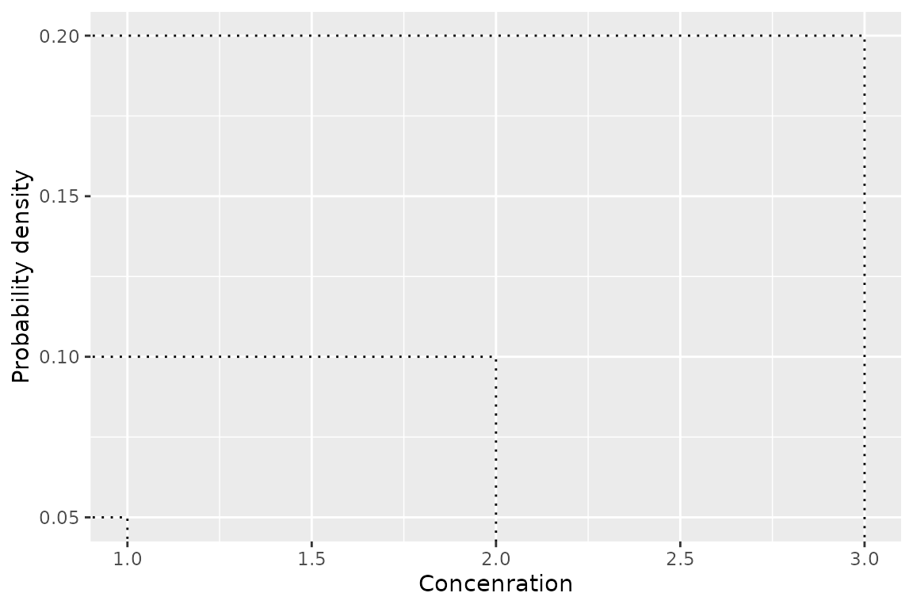
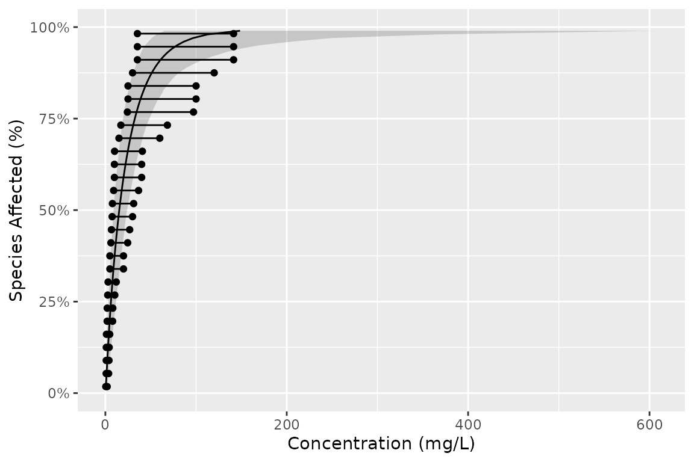
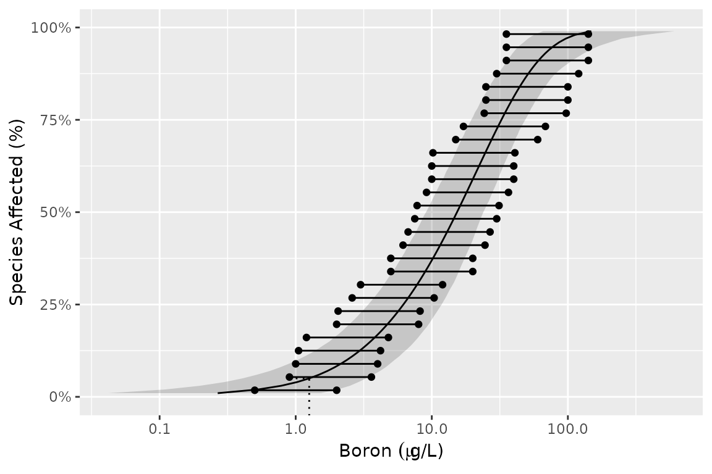

Customising Plots
ssdtools Team
2025-01-14
Source:vignettes/articles/customising-plots.Rmd
customising-plots.RmdPlotting the cumulative distributions
The ssdtools package plots the cumulative distribution
functions using ssd_plot_cdf().
For example, consider the CCME boron data from the ssddata
package. We can fit, and then plot the cdfs as follows.
library(ssdtools)
library(ggplot2)
fits <- ssd_fit_dists(ssddata::ccme_boron)
ssd_plot_cdf(fits)
This graphic is a ggplot object and so can be customized in the usual way.
For example, we can add the model-averaged cdf by setting
average = NA, change the string used to separate thousands
using big.mark, customize the color scale with
scale_color_manual() and change the theme.
ssd_plot_cdf(fits, average = NA, big.mark = " ") +
scale_color_manual(name = "Distribution", breaks = c("average", names(fits)), values = 1:7) +
theme_bw()ggplot Geoms
The ssdtools package provides four ggplot geoms to allow
you construct your own plots.
geom_ssdpoint()
The first is geom_ssdpoint() which plots species
sensitivity data
ggplot(ssddata::ccme_boron) +
geom_ssdpoint(aes(x = Conc)) +
ylab("Probability density") +
xlab("Concentration")
geom_ssdsegments()
The second is geom_ssdsegments() which plots the ranges
of censored species sensitivity data
ggplot(ssddata::ccme_boron) +
geom_ssdsegment(aes(x = Conc, xend = Conc * 4)) +
ylab("Probability density") +
xlab("Concenration")
geom_xribbon()
The third is geom_xribbon() which plots species
sensitivity confidence intervals
ggplot(boron_pred) +
geom_xribbon(aes(xmin = lcl, xmax = ucl, y = proportion)) +
ylab("Probability density") +
xlab("Concenration")
geom_hcintersect()
And the fourth is geom_hcintersect() which plots hazard
concentrations
ggplot() +
geom_hcintersect(xintercept = c(1, 2, 3), yintercept = c(0.05, 0.1, 0.2)) +
ylab("Probability density") +
xlab("Concenration")
Putting it together
Geoms can be combined as follows
gp <- ggplot(boron_pred, aes(x = est)) +
geom_xribbon(aes(xmin = lcl, xmax = ucl, y = proportion), alpha = 0.2) +
geom_line(aes(y = proportion)) +
geom_ssdsegment(data = ssddata::ccme_boron, aes(x = Conc / 2, xend = Conc * 2)) +
geom_ssdpoint(data = ssddata::ccme_boron, aes(x = Conc / 2)) +
geom_ssdpoint(data = ssddata::ccme_boron, aes(x = Conc * 2)) +
scale_y_continuous("Species Affected (%)", labels = scales::percent) +
xlab("Concentration (mg/L)") +
expand_limits(y = c(0, 1))
gp
To log the x-axis and include mathematical notation and add the HC5 value use the following code.
gp +
scale_x_log10(
latex2exp::TeX("Boron $(\\mu g$/L)$")
) +
geom_hcintersect(xintercept = ssd_hc(fits)$est, yintercept = 0.05)
Saving plots
The most recent plot can be saved as a file using
ggsave(), which also allows the user to set the
resolution.
ggsave("file_name.png", dpi = 300)Licensing
Copyright 2015-2023 Province of British Columbia
Copyright 2021 Environment and Climate Change Canada
Copyright 2023-2024 Australian Government Department of Climate Change,
Energy, the Environment and Water
The documentation is released under the CC BY 4.0 License
The code is released under the Apache License 2.0